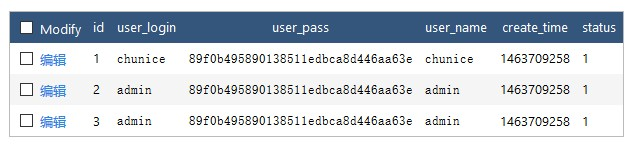

DISTINCT 方法用于返回唯一不同的值 。
例如数据库表中有以下数据

以下代码会返回user_login字段不同的数据
Db::table('think_user')->distinct(true)->field('user_login')->select();生成的SQL语句是： SELECT DISTINCT user_login FROM think_user
返回以下数组
array(2) {
[0] => array(1) {
["user_login"] => string(7) "chunice"
}
[1] => array(1) {
["user_login"] => string(5) "admin"
}
}distinct方法的参数是一个布尔值。